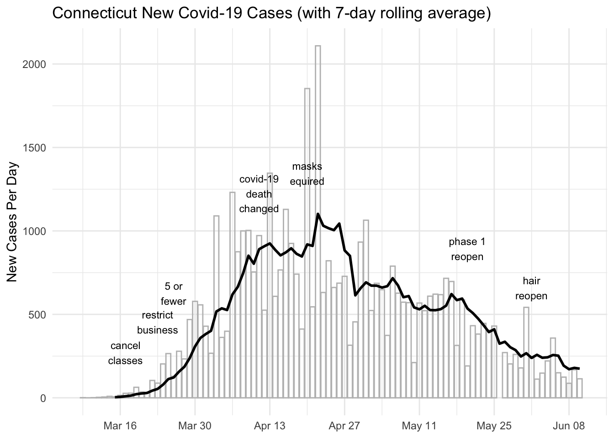
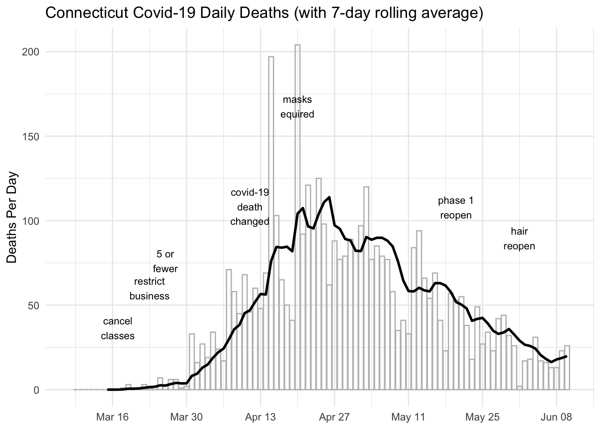
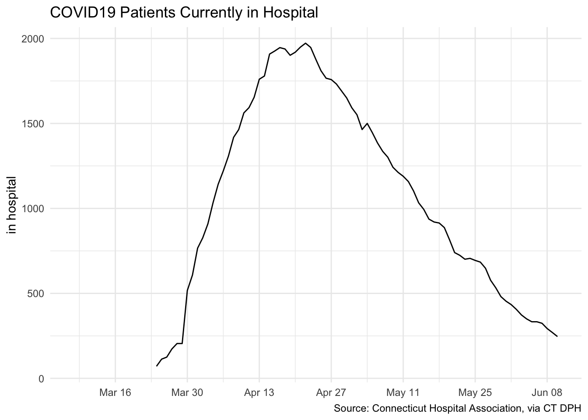

The post I created back in March aimed to track the growth of Covid-19 as it hit Connecticut. Back then (at the end of March) I didn’t realize that the greater New York area (including Connecticut) would be the center of the first wave in the US. At that time what I was reading focused on the nature of exponential growth of an epidemic. We were urged to “flatten the curve” and there was an emphasis on the shape of the growth of cumulative cases and deaths caused by the virus. I have been upading the figures in that post each evening. During tht time the Connecticut data portal has expanded, and I’ve built some R code that let’s me easily update that post. I’ll use the same data infrastructure for this post as well.
The focus on this post is what’s happening recently. The first plot will show the average number of new cases reported each day along with a line that displays the rolling seven-day average. Typically there are day-of-the-week effects in the reporting so it’s best to focus on the seven-day average.
The plot show the history of new cases and also shows the actions in Governor Lamont’s executive orders.
The number of new cases peaked in mid April and then began to decrease almost as rapidly.

